Thm-Pre Security
最后更新时间:
文章总字数:
预计阅读时间:
0x00 前言
此学习路径将教您开始网络安全的必备技术知识。要攻击或防御任何技术，你必须首先了解该技术的工作原理。
The Pre-Security learning path is a beginner friendly and fun way to learn the basics. Your cyber security learning journey starts here!
安全预科学习路径是一种适合初学者且有趣的基础知识学习方式。您的网络安全学习之旅从这里开始！
No Prior Knowledge 没有前置知识
- You need no prerequisite to start this pathway! Just enthusiasm and excitement to learn!
您无需先决条件即可开始此途径！只是学习的热情和兴奋！
0x01 网络基础知识
1.1 Task1 什么是网络？
在这个简短的交互式模块中开始学习计算机网络的基础知识。
网络只是连接的事物。例如，你的朋友圈：你们因为相似的兴趣、爱好、技能和种类而联系在一起。
网络遍布各行各业：
- A city’s public transportation system
一个城市的公共交通系统 - Infrastructure such as the national power grid for electricity
国家电网等基础设施电力 - Meeting and greeting your neighbours
与邻居见面并打招呼 - Postal systems for sending letters and parcels
用于发送信件和包裹的邮政系统
但更具体地说，在计算中，网络是相同的想法，只是分散到技术设备中。以您的手机为例；你拥有它的原因是为了访问事物。我们将介绍这些设备如何相互通信以及遵循的规则。
在计算中，网络可以由 2 台到数十亿台设备组成。这些设备包括从笔记本电脑和手机到安全摄像头、交通信号灯甚至农业的所有设备！
网络已融入我们的日常生活。无论是收集天气数据、为家庭供电，甚至确定谁拥有道路通行权。由于网络已深深融入现代社会，因此网络是网络安全中需要掌握的一个基本概念。
以下图为例，Alice、Bob 和 Jim 已经形成了他们的网络！我们稍后会讨论这个问题。
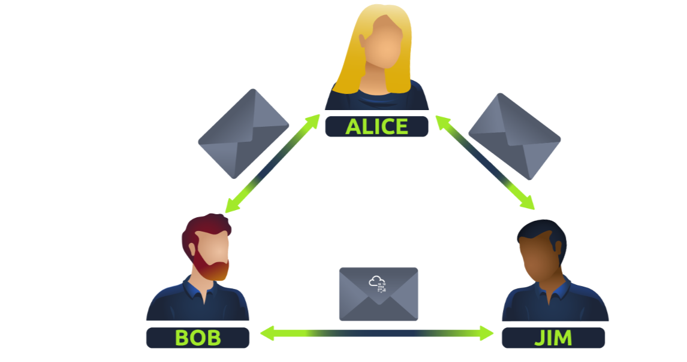
网络有各种形状和大小，这也是我们将在本模块中讨论的内容。
问题一：
连接在一起的设备的关键术语是什么？ — 答案是network
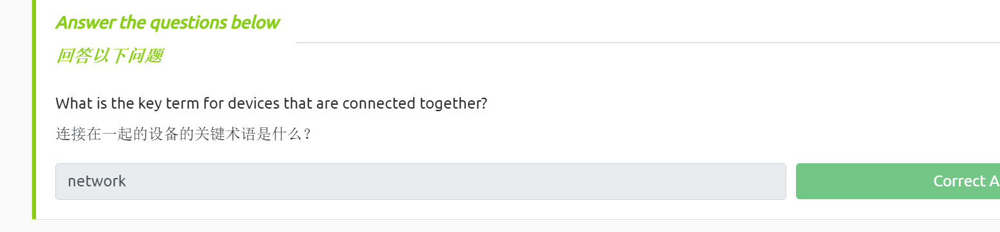
1.2 Task2 什么是互联网？
现在我们已经了解了什么是网络以及如何在计算中定义网络（仅是连接的设备），让我们探索一下互联网。
互联网是一个巨大的网络，其内部由许多许多小网络组成。使用上一个任务中的示例，现在让我们假设 Alice 结识了一些名为 Zayn 和 Toby 的新朋友，她想将他们介绍给 Bob 和 Jim。问题是爱丽丝是唯一与扎恩和托比说同一语言的人。所以必须由爱丽丝来充当信使！
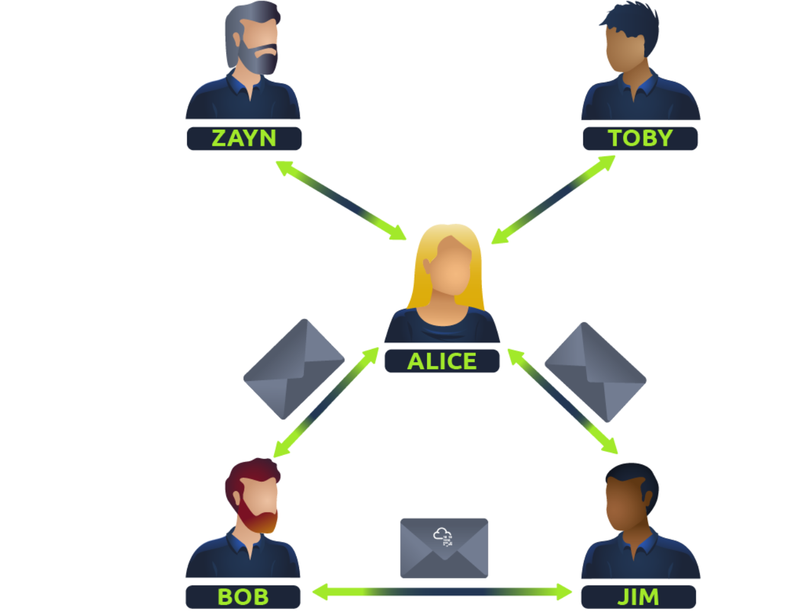
因为爱丽丝可以说两种语言，所以他们可以通过爱丽丝相互交流——形成一个新的网络。
互联网的第一次迭代出现在 20 世纪 60 年代末的 ARPANET 项目中。该项目由美国国防部资助，是第一个有记录的正在运行的网络。然而，直到 1989 年，蒂姆·伯纳斯·李 (Tim Berners-Lee) 通过万维网 (WWW) 发明了我们所熟知的互联网。直到此时，互联网才开始被用作存储和共享信息的存储库，就像今天一样。
让我们将爱丽丝的朋友网络与计算设备联系起来。互联网看起来像是此类图的放大版本：
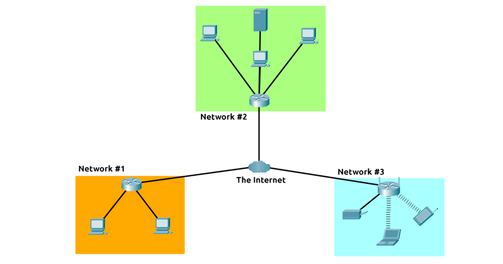
如前所述，互联网由许多连接在一起的小型网络组成。这些小型网络称为专用网络，连接这些小型网络的网络称为公共网络 - 或互联网！因此，回顾一下，网络可以是以下两种类型之一：
- A private network 专用网络
- A public network 公共网络
设备将使用一组标签来在网络上识别自己，我们将在下面的任务中介绍这一点。
问题一：
谁发明了万维网？
答案：Tim Berners-Lee
1.3 Task 3识别网络上的设备
为了通信和维持秩序，设备必须在网络上具有识别性和可识别性。如果一天结束时你都不知道自己在和谁说话，那有什么用呢？
网络上的设备与人类非常相似，我们有两种识别方式：
- Our Name 我们的名字
- Our Fingerprints 我们的指纹
现在我们可以通过改名契改变我们的名字，但是我们不能改变我们的指纹。每个人都有一套单独的指纹，这意味着即使他们改变了名字，背后仍然有一个身份。设备具有相同的特性：两种识别方式，其中一种是可渗透的。这些都是：
- An IP Address IP地址
- A Media Access Control (MAC) Address – think of this as being similar to a serial number.
媒体访问控制 (MAC) 地址——将其视为类似于序列号。
IP地址
简而言之，IP 地址（或互联网协议）地址可以用作在一段时间内识别网络上的主机的一种方式，然后该 IP 地址可以与另一个设备关联，而无需更改 IP 地址。首先，让我们准确地划分一下下图中的 IP 地址：
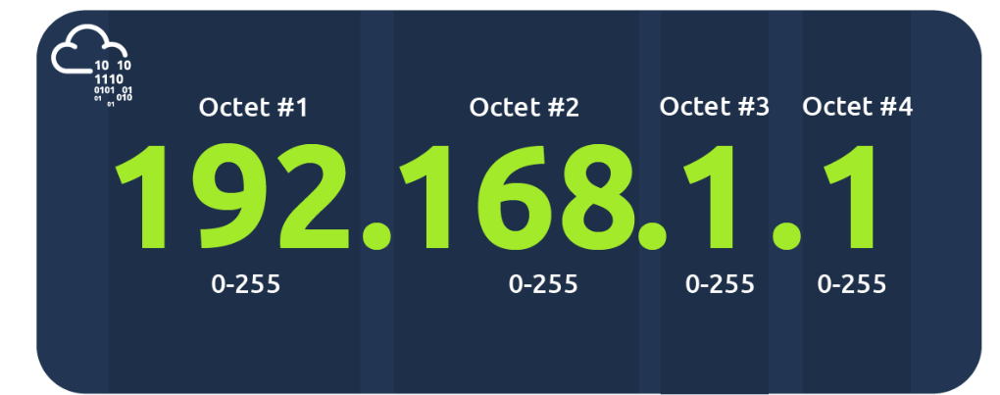
IP地址是一组数字，分为四个八位字节。每个八位字节的值将汇总为网络上设备的IP地址。这个数字是通过一种称为IP寻址和子网划分的技术计算出来的，但那是另一天的事情了。这里需要理解的重要一点是，IP地址可以在设备之间变化，但不能在同一网络中同时激活多次。
IP 地址遵循一组称为协议的标准。这些协议是网络的支柱，迫使许多设备以相同的语言进行通信，这是我们下次会讨论的内容。但是，我们应该记住，设备可以位于专用网络和公共网络上。根据他们所在的位置，将确定他们拥有的 IP 地址类型：公共 IP 地址或私有 IP 地址。
公网地址用来识别互联网上的设备，而私网地址则用来在其他设备中识别某个设备。请参考下面的表格和截图作为例子。这里我们有两个设备在私人网络上：
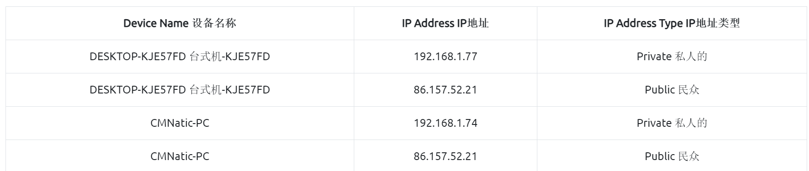
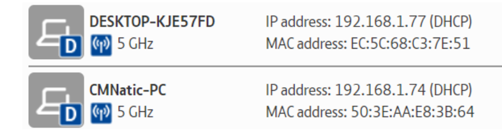
这两个设备将能够使用其私有 IP 地址相互通信。但是，从这些设备发送到互联网的任何数据都将由相同的公共 IP 地址标识。公共 IP 地址由您的互联网服务提供商（或 ISP）按月付费（您的账单！）
随着越来越多的设备相互连接，获得一个未被使用的公网地址变得越来越困难。例如，网络行业巨头思科（Cisco）估计到2021年底，将有大约500亿台设备连接到互联网上。（Cisco，2021年）。这就是引入IP地址版本的原因。到目前为止，我们只讨论了一种被称为IPv4的互联网协议地址方案，它采用2^32（即42亿9000万）的编号系统——所以你可以看出为什么会有这样的短缺！
IPv6 是 Internet 协议寻址方案的新版本，可帮助解决此问题。虽然它看起来更令人生畏，但它拥有一些好处：
- 支持多达 2^128 个 IP 地址（超过 340 万亿个），解决了 IPv4 面临的问题
- 采用新方法，效率更高
下面的屏幕截图比较了 IPv6 和 IPv4 地址。
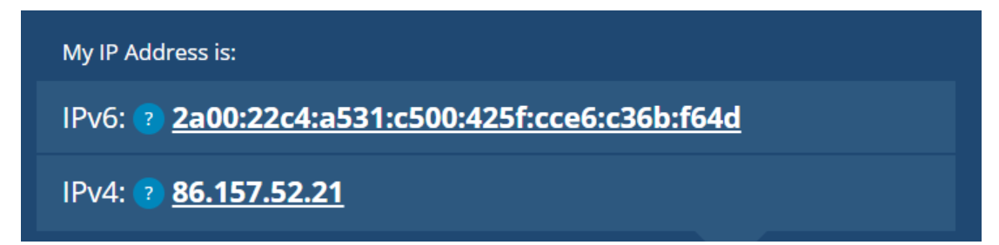
MAC 地址
网络上的设备都将具有物理网络接口，该接口是设备主板上的微芯片板。此网络接口在出厂时被分配了一个唯一的地址，称为 MAC（媒体访问控制）地址。MAC 地址是一个 12 个字符的十六进制数（计算中用于表示数字的以 16 为基数的编号系统），分为两部分，并用冒号分隔。这些冒号被视为分隔符。例如，a4：c3：f0：85：ac：2d。前 6 个字符表示创建网络接口的公司，后 6 个字符是唯一的数字。
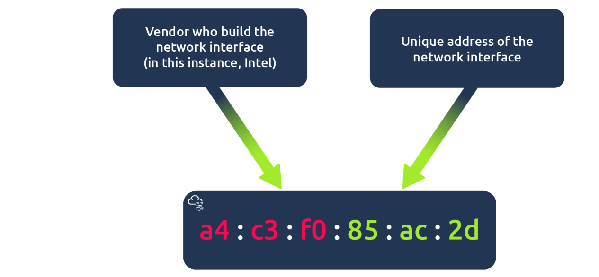
然而，MAC地址的一个有趣之处在于，它们可以被伪造或“欺骗”，这个过程被称为欺骗。当一个网络设备假装利用其MAC地址识别为另一个设备时，就发生了欺骗。当这种情况发生时，它通常会破坏那些假定网络上的通信设备是可信的、实现不够完善的安全设计。考虑以下情景：防火墙被配置为允许任何来自管理员MAC地址的通信进出。如果有一个设备假装或“伪造”这个MAC地址，防火墙现在会认为它正在从管理员那里接收通信，但事实并非如此。
像咖啡馆、咖啡店和酒店这样的场所在使用他们的“客人”或“公共”Wi-Fi时，常常会采用MAC地址控制。这样的配置可以提供更好的服务，即如果你愿意为每台设备支付费用，就可以获得更快的连接速度。附加在这个任务上的互动实验室已经被设置为复制这种情景！
实践
交互式实验室模拟酒店Wi-Fi网络，您必须为服务付费。您会注意到，路由器不允许 Bob 的数据包（蓝色）进入 TryHackMe 网站并将它们放入垃圾箱，但 Alice 的数据包（绿色）运行正常，因为她已经支付了 Wi-Fi 费用。尝试将 Bob 的 MAC 地址更改为与 Alice 的 MAC 地址相同，看看会发生什么。
部署交互式实验室并继续回答以下问题。
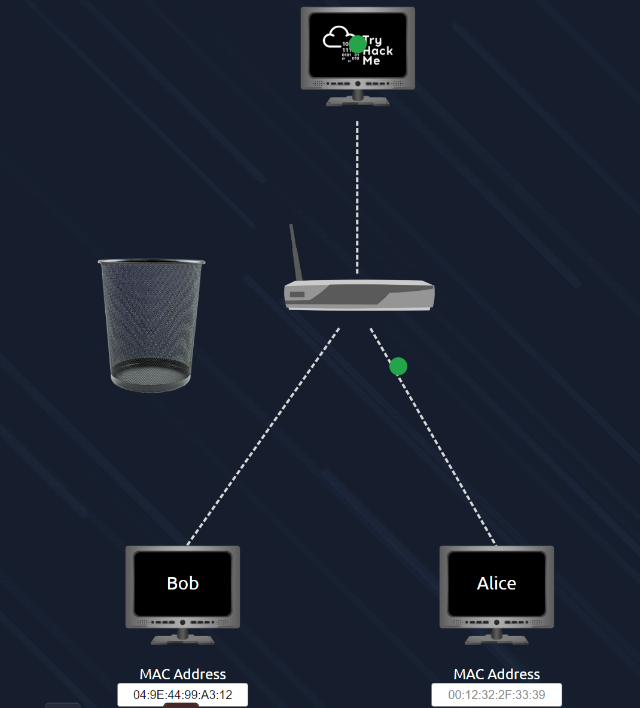
这里成功部署实验室可以看到只有Alice可以访问tryhackme
问题一：
“IP”一词代表什么？
答案：Internet Protocol–互联网协议
问题二：
IP 地址的每个部分都叫什么？
答案：octet–字节
问题三：
一个 IP 地址有多少个部分（以数字为单位）？
答案：4
问题四：
“MAC”一词代表什么？
答案：Media Access Control–媒体访问控制
问题五：
使用“查看站点”按钮部署交互式实验室，并欺骗您的 MAC 地址以访问该站点。flag是什么？
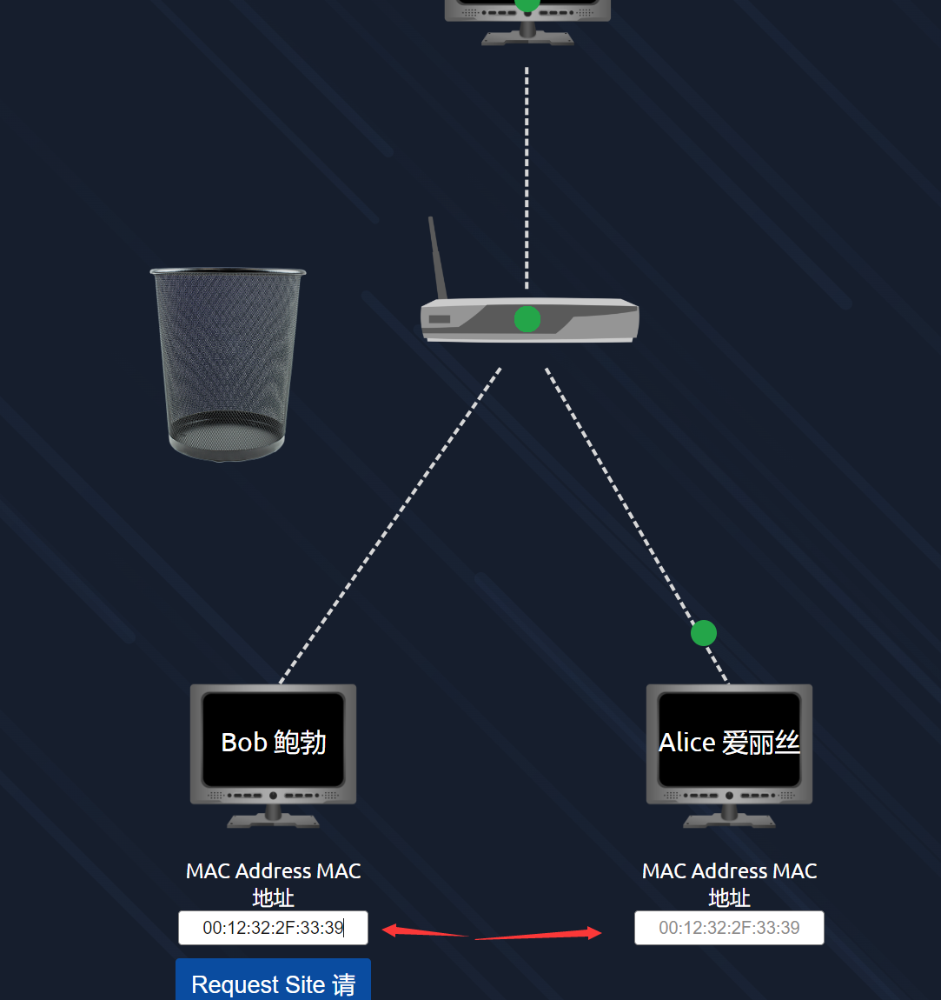
这里我们按照题意将左边的Mac地址进行修改，如下图，可以看到Bob也可以访问tryhackme，成功获得flag
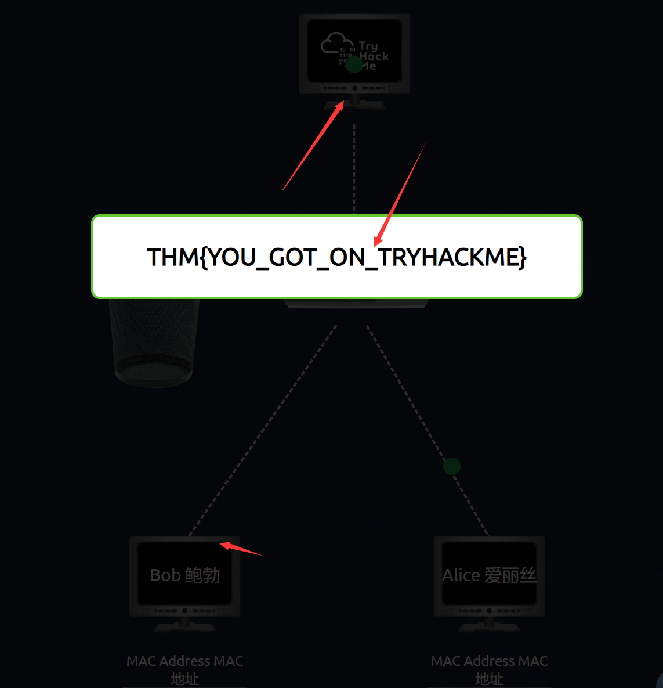
1.4 Task 4 Ping (ICMP)
Ping 是我们可用的最基本的网络工具之一。 Ping 使用 ICMP（互联网控制消息协议）数据包来确定设备之间连接的性能，例如连接是否存在或是否可靠。
ICMP 数据包在设备之间传输所花费的时间通过 ping 来测量，如下面的屏幕截图所示。此测量是使用 ICMP 的回显数据包以及来自目标设备的 ICMP 回显回复来完成的。
可以针对网络上的设备（例如家庭网络或网站等资源）执行 Ping。该工具可以轻松使用并安装在 Linux 和 Windows 等操作系统 (OS) 上。执行简单 ping 的语法是 ping IP address or website URL 。让我们在下面的屏幕截图中看看它的实际效果。
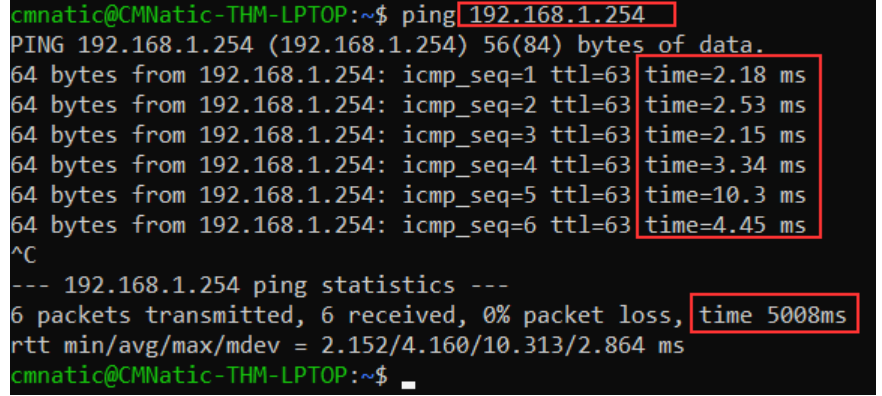
在这里，我们正在 ping 私有地址为 192.168.1.254 的设备。 Ping 通知我们已经发送了 6 个 ICMP 数据包，所有数据包的平均接收时间为 4.16 秒。
现在，您将在此任务中执行相同的操作来 ping 可部署网站上的“8.8.8.8”地址。 Ping 正确的地址将显示一个标志来回答下面的问题。
问题一：
ping 使用什么协议？
答案：ICMP–互联网控制消息协议
问题二：
ping 10.10.10.10 的语法是什么？
答案：ping 10.10.10.10
问题三：
当您 ping 8.8.8.8 时，您会得到什么flag？
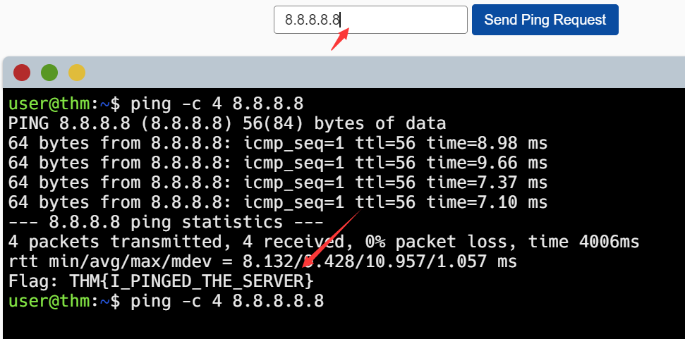
指定位置输入即可
1.5 Task 5 继续学习：LAN 简介
加入LAN room继续卷！
0x02 局域网简介
了解一些为专用网络提供支持的技术和设计
2.1 Task 1 介绍 LAN 拓扑
局域网 (LAN) 拓扑
多年来，人们对各种网络设计进行了实验和实施。在网络方面，当我们提到术语“拓扑”时，我们实际上指的是当前网络的设计或外观。下面我们来讨论这些拓扑的优点和缺点。
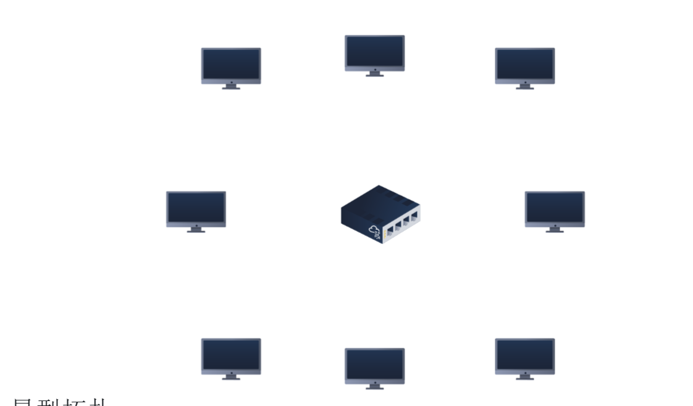
星型拓扑
星形拓扑的主要前提是设备通过中央网络设备（例如交换机或集线器）单独连接。尽管成本高昂，但这种拓扑由于其可靠性和可扩展性而成为当今最常见的拓扑。
发送到此拓扑中的设备的任何信息都是通过其连接的中央设备发送的。下面让我们探讨一下这种拓扑的一些优点和缺点：
由于此拓扑需要更多的布线和购买专用网络设备，因此它比任何其他拓扑都更昂贵。然而，尽管增加了成本，但这确实提供了一些显着的优势。例如，这种拓扑本质上更具可扩展性，这意味着随着网络需求的增加，很容易添加更多设备。
不幸的是，网络规模越大，保持网络功能所需的维护就越多。这种对维护的依赖性的增加也会使故障排除变得更加困难。此外，星形拓扑结构仍然容易出现故障——尽管故障有所减少。例如，如果连接设备的集中式硬件发生故障，这些设备将无法再发送或接收数据。值得庆幸的是，这些集中式硬件设备通常都很强大。
总线拓扑
这种类型的连接依赖于称为主干电缆的单个连接。这种类型的拓扑类似于树的叶子，因为设备（叶子）源自该电缆上的分支。
由于发往每个设备的所有数据都沿着同一条电缆传输，因此如果拓扑中的设备同时请求数据，则很快就会变得缓慢并出现瓶颈。此瓶颈还会导致故障排除非常困难，因为数据都沿同一路径传输时，很快就很难确定哪个设备遇到问题。
然而，尽管如此，由于其费用较低，例如用于连接这些设备的电缆或专用网络设备，总线拓扑结构是设置起来更为简单和成本效益较高的拓扑之一。
最后，总线拓扑结构的另一个缺点是在出现故障时几乎没有冗余性（备份功能）。这个缺点是因为主干电缆上有一个单一的故障点。如果这根电缆断裂，设备将无法沿着总线接收或传输数据。
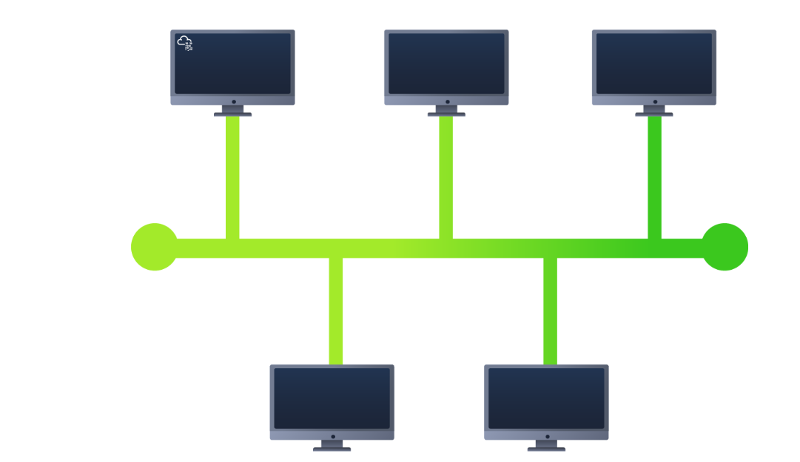
环形拓扑
环形拓扑（也称为令牌拓扑）具有一些相似之处。计算机等设备直接相互连接以形成环路，这意味着几乎不需要布线，并且对星形拓扑等专用硬件的依赖也较少。
环形拓扑通过沿着环路发送数据，直到数据到达目的设备，使用环路上的其他设备来转发数据。有趣的是，在这种拓扑中，只有当设备本身没有要发送的数据时，它才会发送从另一台设备接收到的数据。如果设备恰好有数据要发送，它会先发送自己的数据，然后再发送来自另一台设备的数据。
因为数据在这种拓扑中只有一个方向可以传播，所以排查任何故障都相对容易。然而，这是一把双刃剑，因为这种方式并不是数据在网络上传输的高效方法，因为数据可能必须首先访问许多个设备，然后才能到达目标设备。
最后，环形拓扑不容易出现瓶颈问题，例如在总线拓扑中那样，因为大量的流量并不会在任何时候穿过网络。然而，这种拓扑的设计意味着，例如电缆断裂或设备损坏等故障将导致整个网络停止工作。
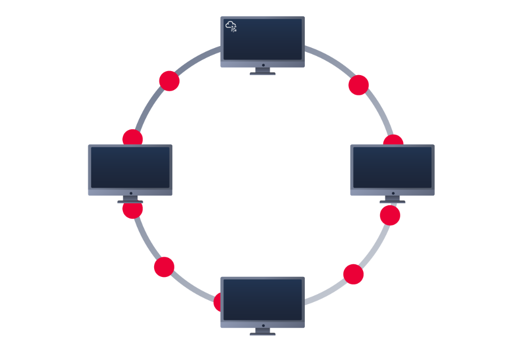
什么是Switch交换机？
交换机是网络中的专用设备，旨在聚合多个其他设备，例如计算机、打印机或任何其他使用以太网的联网设备。这些不同的设备插入交换机的端口。交换机通常出现在较大的网络中，例如企业、学校或类似规模的网络，其中有许多设备连接到网络。交换机可以通过 4、8、16、24、32 和 64 端口供设备插入来连接大量设备。
交换机比其较小的对应设备（集线器/中继器）效率更高。交换机会跟踪哪个设备连接到哪个端口。这样，当它们收到数据包时，它不会像集线器那样将该数据包重复发送到每个端口，而是将其发送到预期目标，从而减少网络流量。
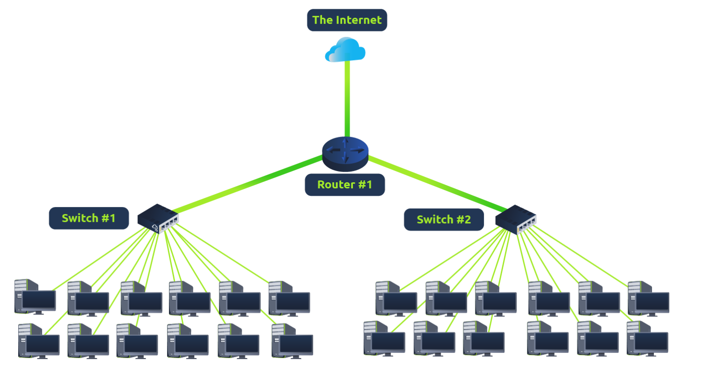
交换机和路由器可以相互连接。这样做可以通过为数据增加多条传输路径来提高网络的冗余性（可靠性）。如果一条路径出现问题，还可以使用另一条路径。虽然这可能会降低网络的整体性能，因为数据包需要更长的时间传输，但网络不会出现停机时间——考虑到其他可能的情况，这是一个很小的代价。
什么是路由器？
路由器的工作是连接网络并在它们之间传递数据。它通过使用路由来实现这一点（因此得名路由器！）。
路由是指数据在网络间传输过程的标签。路由涉及在网络之间创建路径，以便成功传送数据。
当设备通过多条路径连接时，路由非常有用，例如下面示例图所示的情况。
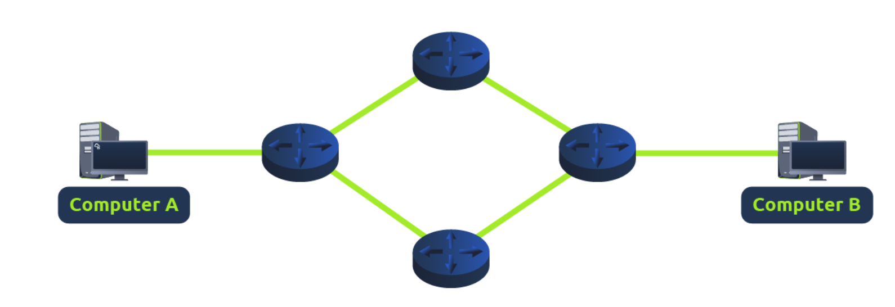
实践
此任务附带一个交互式实践，其中包含所讨论的 LAN 拓扑。了解它们容易损坏的各种方式。破坏 LAN 拓扑以检索标志。
问题一：
局域网代表什么？
答案：Local Area Network
问题二：
表示路由器执行工作的动词是什么？
答案：routing
问题三：
使用什么设备来集中连接本地网络上的多个设备并将数据传输到正确的位置？
答案：Switch–交换机
问题四：
设置什么拓扑经济高效？
答案：Bus Topology–总线拓扑
问题五：
哪种拓扑的设置和维护成本较高？
答案：Star Topology–星型拓扑
问题六：
完成此任务附带的交互式实验。最后给出的flag是什么？
跟着实验室做一遍即可